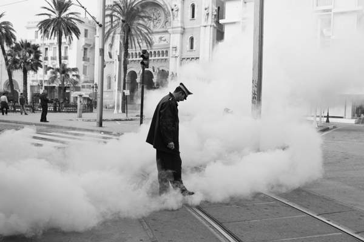

-
Letter to a Tunisian Friend
by Toni Negri April 27, 2011
January 24, 2011
Dear A,
Twenty years ago, when you were my student at Paris 8, we truly could not have imagined that the Tunisian revolution would have had similar characteristics and would have raised constitutional problems analogous to the ones of an uprising in central Europe. Back then, we studied the expulsion of the working-class from the phosphate mines of southern Tunisia, harbinger of great waves of both internal and external migration and the slow process of transformation that the relocation of European textiles was causing in your country. You struggled to show me Tunisia’s productive potential beyond textiles or the tourism industry or gas and petroleum (which would only expand much later). Everything happened terribly fast. Twenty years ago we were stuttering over the word “globalization,” and today globalization has reached such a point that Tunisia (and along, with it, the whole world) has become a province of Europe. Twenty years ago we were beginning to understand the transformation from industrial labor to immaterial labor and today Tunisia has a super-abundance of this latter type of labor force. And today, twenty years later, we recognize the terrifying transformations that neoliberalism has imposed on, and through, the changes in the structure of the market and the nature of labor: the end of the classical salary system, and with it deadening mass unemployment and an unsustainable precaritization [precarizzazione]–35% of the young are cognitive workers but only 10% work; in addition, in Tunisia, there are the unleashed and accumulated attacks on the first fruits of welfare, fierce regional disparities, the disastrous effects of the migration process (whether successful or interrupted), the freeze on foreign investments, etc. In short, these last twenty years have gifted us the affirmation of a mafioso dictatorship, uncontrollable corruption and a repressive system that is both shrewd and cruel (shrewd because it supports and legitimates itself based on Western fears of an Islamist threat, cruel because it has been purely and simply class domination, the exploitation and oppression of workers and honest people by corrupt potentates.
What is to be done, you ask me, now that knowledge of the exploitation has become widespread and the desire for liberty has rebelled and won? The insurrection has created new strengths: how to use them, how to move them against the old enemies and against the new ones which will soon appear? “Dear professor,” you write me, “remember when we made ironic jokes about the Enlightenment thinkers who competed with each other for prizes with their projects for new Constitutions of Corsica or Poland or even the Caroline islands? Why then don’t we discuss (this time without joking) the contents for a new Constitution for Tunisia — not so much because there aren’t people here who are capable of doing it well (imbued with solitary reflections of a conspiracy, with a global political culture which nonetheless thrives–certainly more than in Italy –on the anxiety of rebellion and the joy of victory)–but because to speak of Tunisia, of the new rights we must construct, of the guarantees we must define, is also today to speak of Europe; now may be the time, if it ever was, one of its regions will liberate itself from the current despots!”
Comrade A., my friend, you haven’t convinced me — that irony that you consider no longer necessary remains a habit for me; I remain convinced that there’s no substitute for the protagonists who do and propose. It’s true that your problem is now general, that a new constitution of liberty isn’t only a Tunisian problem but one for all free people. So I send you below some reflections, for the purpose of opening a discussion, a forum in which many can participate. To begin I insist on some points, which to me seem more important than others, to qualify what might today be a true democracy — or truly an “absolute democracy,” which back then, twenty years ago, we were already envisioning.
1) To the old powers (legislative, executive, judicial), which it is necessary to purify and restore vigorously under the permanent and enhanced control of the legislative branch, we must add at least two other agencies of democratic governance, one which deals with “the media sector” and another which deals with “banking” and “finance.”
In the first place, it is no longer possible to imagine a democratic regime in which information, communication and the construction of public opinion are not bound to the respect of the truth, liberty, and the opinion of the multitude. The extreme importance that internet initiatives have had during the insurrection must be safeguarded by the continuous possibility that they may be exercised. Those practices must not be considered exceptional and should rather be transformed by placement under continuous democratic control. But this is not enough: the old media must also be placed under social control which will free its activities from the obstacles that the executive and political parties could impose. Now, there is only one way to affirm this democratic form: the right to free expression [or “freedom of expression”] must be liberated from the power of money. The freedom of information cannot represent the street through capitalization but must be guaranteed by popular sovereignty for the purpose of promoting discussion, the clash of opinions, decisions. The right to free expression [or “freedom of expression”] cannot solely be guaranteed for the individual but also directly for collective exercise, excluding every capitalist pretense to exploit it and every attempt to subjugate it. The right to free expression [or “freedom of expression”] must be affirmed as a constituent power, open to legitimation by the common.
2) “Banking” and “finance” have become, over the course of capitalism’s development, a power of their own, controlled by political and industrial elites. Under neoliberalism even this control has ended, such that finance now has been rendered completely independent, legitimizing it’s intervention on a global level. In Tunisia, as you said, a progression of the forms of capitalist control over civil life also plays out in the passage to democracy. Finance capital is already presenting itself in a more aggressive manner–and, as far as communication goes, while censorship is definitively disappearing, new forms of control are appearing.
The problem, then, is one of stopping this process, of transforming banking into a public service, in which the allocation of financial funds and the development of investment policy may be decided collectively. The instruments of finance must be placed at the service of the multitude. It is clear that this implies the construction of democratic powers of financial programming, coordinated with the activities of the legislature and the executive, so that monetary power is stripped of the false and hypocritical power of the central bank — which has been made into an instrument of global capital. This is a difficult path to travel. We find ourselves confronting not only the national banks but also the global interests of capital. But it is a path which must be traveled with great determination — cautiously but with determination. Indeed, thus one lays down the first stone of a global uprising against neoliberalism and finance capital, an uprising never so ripe as now!
The New York Times recognized this immediately: “one small revolution,” like the Tunisian one, could inflame not only the Maghreb but the Arab world. In thinking about it we need to keep in mind, then, that an autocrat can make concessions (to the people but above all to the banks and multinational corporations) more easily than a democratic leader, however weak — such as one that in the end the Tunisians will elect. That, then, is the American prediction. So here is the consequence of our hypothesis: it is not possible today to imagine a democratic revolution that does not carry out, before every other operation, a nationalization of the banks, a redistribution of income to follow step by step the restoration of the form of the common right. Only thus can the power of the multitude constitute itself. The aim of this finance agency, managed democratically, directed, is that of the guarantee of the welfare of the Tunisian people, against precariousness, stabilizing a guaranteed income, the possibility of a full education and health care adequate for each citizen.
Today there is no liberty which does not reside in the common. It is not an accident that the dictatorship has privatized everything in Tunisia that could be privatized — it must, therefore, be re-appropriated. Dear A., the future of your generation and your children is based only on the common and on common management. Certainly, the disaster that you inherit will not cancel itself in one blow — as soon as the clouds following the insurrection dissipate your priorities will be to concentrate and decide. But the dispositif of a constitutional government can do nothing but concern itself with the common. Do not leave this issue of the common (this is also your worry, comrade A.) to the Islamists. They already carry out their activities under a false propaganda of the common.
3) The third point is regarding the form of the government. As you say, the Tunisian revolt has been social, it was born out of an entire working society. Ben Ali had understood well that above all he could not allow the social revolt to express itself politically and every politician knew that in youth unemployment there was a bomb waiting to explode. Why?
The young — cognitive labor — are today the true working class of the postindustrial age. Since they are cognitive laborers, the young are not powerless–on the contrary, they have means to overcome the frustration that has suppressed the poorer and old strata of the population. The culture of powerlessness has been beaten on the streets of Tunisia.
Now the young must keep the revolutionary process open, transforming the insurrection into a machine of constitutional government. They cannot leave the transformations of the country’s constitution in the hands of the old elites (whether socialists, democrats, or Islamists). On the other hand, the Tunisians today are less in need of a new constitution than in need of a constitutional process extended to the entire country — including the armed forces, the magistracy, and the universities. The legislative power and the “governance” necessary to put the country in motion must be directly exercised by the young and by revolutionary groups, organizing themselves in all the places where it is possible and urgent to do so. But they can do all of this if they avoid, for the longest time possible, the fixing of forms of stable representation (according to those Enlightenment projects for democratic constitutions we were discussing earlier, such a period could not be shorter than a decade). The agility of global power, of its banks, its central institutions, is truly great: they would not have any difficulty, those gentlemen, in finding (and paying off) some socialist or some Islamist to change the balance of power in their favor! The insurrection has been agile and needs to find just as much agility in positioning itself against global power and its Mediterranean exponents, which are already consolidating themselves against the extreme danger of the Tunisian revolution and its expansion across the Maghreb. Let’s not forget (and wasn’t this precisely your worry, comrade A.?): if we do not construct councils of constitutional action, there will be Islamists who, whether hardline or moderate, take politics back into the mosques. Meanwhile, the more politics becomes democratic and constitutional, the more people will become secular…
Ciao, let’s continue to exchange information. We’ve been breathing new air for some time, a little bit everywhere. Now we await Algeria!
Toni Negri
P.S. If you read the Western business news, there are those on the right who are talking above all about the downgrading of the rating of Tunisian sovereign debt by the ratings agencies. Moody’s has already devalued it and has changed the forecast from positive to negative. On the same subject, the left criticizes this decision because, by contrast, they insist that even the insurrection is…productive. The end of the mafioso tariffs on Tunisian industry ought to allow for new growth. But what kind of growth? Of poverty, of precariousness?
As for the political press, the right amplifies the threats. “Attention, Tunisian citizens, if you go too far, the army is ready to repress you, the same army which has helped you to free yourselves from Ben Ali,” the commentators go on. Don’t add to the fear of the vacuum. But what does the left, exhausted by its brief moment of joy, ask now? “Now that Ben Ali has gone, will the country know how to reconstruct its state apparatus and conduct a peaceful transition to democracy?” Is that all the left can ask?
In reality, across the political spectrum, the anxiety has been as powerful as the surprise. “Will the transition to democracy in Tunisia become an example, a laboratory, for the Muslim world?” But if this is the only thing we want, it’s really nothing new; on the contrary, it’s really old: simply a new colonialism.
Dear A., let’s not be afraid to think of a new constitution, a new constitutional process, new instruments of democratic power for the citizens. In the Maghreb, in Algeria, in Tunisia and then also in Egypt there have been great and profound moments for the development of a democracy from below. Let’s give the lie to the repressive pettiness of American and European commentators.
P.P.S. I’m re-reading my letter before sending it, it’s the 28th of January, Egypt is burning.
Translated by Nikil Saval. Originally published in Italian at UniNomade 2.0, and in French at Multitudes.